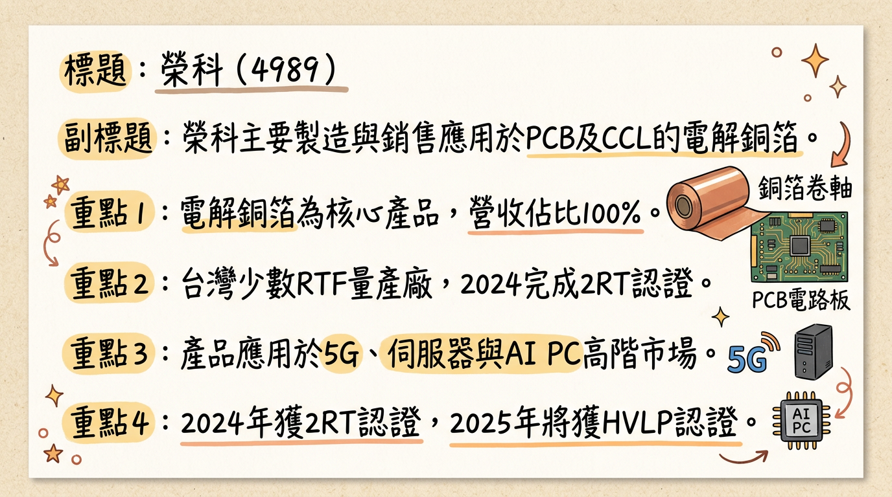
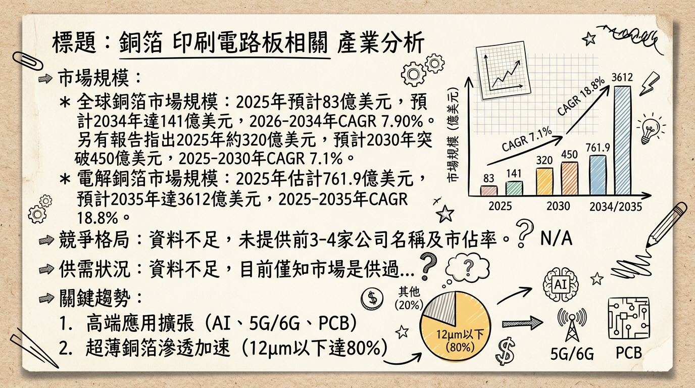
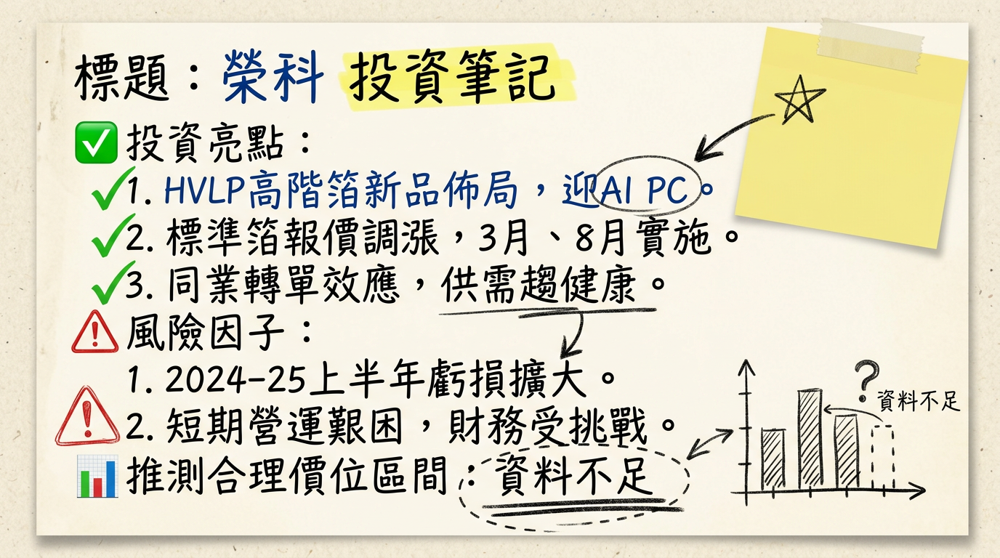

4989 榮科 深度研究報告
一句話摘要
榮科正從傳統銅箔轉型為AI伺服器與高頻高速應用所需的高階電解銅箔，受惠於AI需求爆發與下游庫存回補，近期營收顯著回升，然公司仍處虧損階段，大股東釋股行為與銅價波動為潛在風險，未來成長動能關鍵在於高階產品比重提升與獲利能力轉正。
公司概覽
榮科（股票代號：4989）為李長榮化學工業集團旗下子公司，核心業務專注於電解銅箔的製造與銷售，是印刷電路板（PCB）及銅箔基板（CCL）上游的關鍵材料。公司具備高階「反轉銅箔(RTF)」量產能力，並已於2024年完成特用高階細線路銅箔（2RT）認證，2025年取得HVLP（超低粗糙度銅箔）相關認證，主要應用於AI PC與伺服器領域。
營收結構 (2024年)
| 業務類別 | 營收佔比 | 備註 |
|---|
| 電解銅箔 | 100% | 台灣地區營業收入佔比 |
| 總計 | 100% | 總計 29.94 億新台幣 |
榮科於1998年8月18日在高雄市小港臨海工業區設有年產能1萬公噸的印刷電路板用電解銅箔廠。目前並未找到其他製造基地及各基地營收貢獻比例的公開資訊。
核心競爭優勢
高階銅箔技術領先： 榮科是台灣少數具備高階「反轉銅箔(RTF)」量產能力的廠商，且已於2024年完成特用高階細線路銅箔（2RT）認證，並於2025年取得HVLP（超低粗糙度銅箔）相關認證。這些高階產品表面粗糙度低，是5G、AI伺服器、AI PC等高頻高速訊號傳輸應用不可或缺的材料，技術門檻高於一般銅箔。
市場轉型契機： 積極從通用銅箔轉向高階應用，如AI伺服器與AI PC，正好搭上全球AI發展趨勢，在高階銅箔供不應求的背景下，有利於提升產品單價與毛利率。
供應鏈策略地位： 作為高階CCL上游關鍵材料供應商，在高階銅箔供應吃緊時，榮科有望受惠於訂單外溢效應，爭取更多客戶。
財務分析
月營收趨勢
榮科 (4989) 近 6 個月營收表現 (截至 2026/01)
| 月份 | 金額 (億元新台幣) | 月增率 MoM | 年增率 YoY |
|---|
| 2 026/01 | 3.69 | 26.81% | 170.32% |
| 2025/12 | 2.91 | 26.69% | 83.54% |
| 2025/11 | 2.29 | -17.41% | -2.95% |
| 2025/10 | 2.78 | 12.68% | 54.19% |
| 2025/09 | 2.47 | 21.78% | 6.39% |
| 2025/08 | 2.02 | 22.52% | -18.17% |
- 分析： 榮科月營收在2025年12月及2026年1月出現爆發性成長，特別是2026年1月營收達3.69億元，年增率高達170.32%，創近35個月新高，顯示下游庫存回補與AI相關需求開始顯現。
季度數據
- 2025年第三季： 每股盈餘 (EPS) -0.85元。 (未找到2025-2026年最新季營收、毛利率、營業利益率的具體數字，請參閱「財報深度分析」之利潤率趨勢表)。
年度趨勢
* 全年每股盈餘 (EPS)：
-2.22元。
* 全年累計營收：29.93億元。
* 全年營收：
26.62億元，累計年增率
-11.09%。
* 截至2025年第三季累計每股盈餘 (EPS)：-3.34元。
- 分析： 公司在2024及2025年前三季均處於虧損狀態，全年營收在2025年呈現年減，反映產業景氣低迷與高階轉型初期陣痛。然而，2026年1月單月已轉虧為盈，稅前純益939萬元，親公司股東淨利939萬元，單月每股盈餘0.07元，顯示營運出現轉機。
法說會重點
最近一次與財報相關的公開資訊： 2025年11月1日公告，預計於2025年11月10日召開董事會公布114年度第三季財務報告。
管理層發言與 Guidance：
- 產業展望： 管理層提到未來一兩年銅箔整體產業供過於求仍難免，但公司積極開拓高階產品以優化結構。
- 高階產品進展： 預期HVLP2-4高階應用較吃緊，HVLP3與HVLP4正在測試送樣，終端應用為AI PC & server (Next Generation)，HVLP5則在開發中，應用於利基型產品 (Niche)。
- 認證時程： 2024年已完成特用高階細線路銅箔（2RT）認證，2025年取得HVLP（超低粗糙度銅箔）相關認證。
- 市場機會： 隨著產業景氣逐步回升，標準銅箔市場最壞狀況已過去。高階銅箔市場已確立缺貨趨勢，榮科正積極推進HVLP系列新品開發，預計2025年底進展將較明朗。台系同業不接一般箔訂單，榮科可望受惠轉單效應。
- 股價表現： 儘管榮科轉型陣痛仍處虧損，但市場已在押注AI新藍海帶來的機會。
⚠️ 補充說明： 未找到2025-2026年關於具體出貨量/訂單能見度、產能利用率、資本支出金額以及下季/下半年明確指導的最新資料。
券商觀點
榮科 (4989) 近期券商目標價與評等 (2025-2026年)
| 券商名稱 | 目標價 (新台幣) | 評等 | 日期 |
|---|
| 無 | N/A | N/A | 無近期報告 |
目前搜尋結果未找到2025-2026年榮科（4989）的券商報告、具體目標價、2025-2026年EPS預估數字，以及重大調升/調降評等的最新資料。
財報深度分析
利潤率趨勢
榮科 (4989) 近 8 季利潤率趨勢
| 季度 | 毛利率 | 營業利益率 | 稅後淨利率 |
|---|
| 2025年第三季 | -15.08% | -19.84% | -19.00% |
| 2025年第二季 | -23.85% | -28.36% | -33.94% |
| 2025年第一季 | -15.04% | -21.25% | -18.05% |
| 2024年第四季 | -21.53% | -27.10% | -26.24% |
| 2024年第三季 | -15.33% | -20.49% | -17.75% |
| 2024年第二季 | 0.73% | -3.29% | -0.79% |
| 2024年第一季 | -3.41% | -9.67% | -2.63% |
| 2023年第四季 | -2.96% | -7.10% | -9.33% |
- 分析： 榮科自2024年第二季後，毛利率持續為負值，並在2024年第四季及2025年第二季達到相對低點。這反映了過去一年多產業景氣低迷、產品 ASP（平均售價）壓力大以及原材料成本波動的影響。儘管營收近期回升，但獲利能力尚未全面恢復，顯示公司仍在轉型陣痛期。
存貨與營運
榮科 (4989) 近 4 季存貨與應收帳款週轉天數
| 季度 | 存貨週轉天數 (天) | 應收帳款收現天數 (天) |
|---|
| 2025年第三季 | 76.44 | 73.12 |
| 2025年第二季 | 62.92 | 66.03 |
| 2025年第一季 | 101.70 | 106.58 |
| 2024年第四季 | 89.25 | 112.89 |
- 分析： 存貨週轉天數在2025年第一季達到高峰101.70天後，在第二季顯著下降至62.92天，第三季略升至76.44天。應收帳款收現天數也呈現類似趨勢，從2024年第四季的112.89天下降至2025年第二季的66.03天，第三季略升至73.12天。總體而言，週轉天數有改善跡象，但尚未有資料顯示存貨有異常堆積或大幅備料。
資本支出
⚠️ 補充說明： 未找到2025-2026年榮科具體的資本支出金額、未來計畫與預計新增產能、折舊攤銷趨勢的最新資料。
股權異動
董監事/大股東申報轉讓紀錄
| 申報日期 | 轉讓主體 | 轉讓張數 (張) | 轉讓後持股 (張) | 轉讓後持股比率 (約) | 備註 |
|---|
| 2026/01/16 | 李長榮化學工業(股) | 21,114 | 23,635.81 | 約 17.2% | 充實營運資金 |
| 2025/11/21 | 李長榮化學工業(股) | 5,420 | 44,750 | 約 32.7% | 充實營運資金 |
| 2025/10/17 | 李長榮化學工業(股) | 11,600 | 50,139 | 約 36.6% | 充實營運資金 |
| 2025/10/14 | 李長榮化學工業(股) | 1,846 | N/A | N/A | 鉅額逐筆交易 |
| 2025/09/26 | 李長榮化學工業(股) | 3,700 | N/A | N/A | 充實營運資金 |
| 2025/09/08 | 李長榮化學工業(股) | 10,000 | N/A | N/A | 鉅額逐筆交易 |
| 2025/09/01 | 李長榮化學工業(股) | 4,900 | N/A | N/A | 鉅額逐筆交易 |
| 2025/08/26-27 | 李長榮化學工業(股) | 4,600 | N/A | N/A | 鉅額逐筆交易 |
| 2025/08/22 | 李長榮化學工業(股) | 5,000 | N/A | N/A | 充實營運資金 |
- 分析： 榮科最大股東李長榮化學工業股份有限公司於2025下半年至2026年初持續大量申報轉讓持股，總轉讓張數龐大。這些轉讓被指出是為「充實營運資金」，但如此大規模的股權變動可能對市場信心造成壓力，並壓抑股價上檔空間。
庫藏股、可轉債、增減資
- 庫藏股買回紀錄： 未找到2024-2026年的最新庫藏股買回紀錄。
- 可轉換公司債 (CB)： 未找到2024-2026年的最新資料顯示有發行可轉換公司債。
- 現金增資： 榮科董事會於2025年12月15日決議辦理現金增資發行新股，上限不超過35,000,000股，用於償還銀行借款及充實營運資金。證期局於2026年2月26日重新起算此案的生效日。
- 現金減資： 曾於2021年3月24日決議辦理現金減資153,085,000元 (15,308,500股)，減資比率10%。此為舊資料。
其他財報重點
* 2025年第三季：28.56% (較前一季上升)
* 2025年第二季：24.14%
* 2025年第一季：24.14%
* 2024年第四季：19.89%
* 2024年第三季：23.77%
* 2024年第二季：19.86%
* 2024年第一季：20.28%
- 自由現金流量： 未找到具體數字，但2025年第一至第三季的營業現金對流動負債比與營業現金對負債比皆為負值，顯示營業活動未能產生足夠現金，資金壓力較大。
- 業外收支重大項目： 業外收支波動較大，2025年第二季為-60,874千元，對當季淨利影響顯著。
產業分析
產業數據
* 2025年：預計約 83 億美元至 320 億美元 (不同報告口徑)
* 2034年：預計達 141 億美元 (CAGR 7.90%, 2026-2034)
* 電動車鋰電銅箔市場 (電解銅箔)：2025年估計 761.9 億美元，預計到2035年達 3612 億美元 (CAGR 18.8%, 2025-2035)
* 高品質銅箔市場：2026年達 11.6 億美元，2031年成長至 15.8 億美元 (CAGR 6.38%, 2026-2031)
*
高階HVLP銅箔 (特別是HVLP4) 供不應求。 2026年第一季HVLP4全球需求約592噸/月，供給約600噸/月，大致平衡。但進入第二季，需求預計倍增至1266噸，供給仍僅600噸，
缺口達666噸。2026年下半年，即便三井金屬與金居產能開出，供給提升至950噸，第三季、第四季需求仍達1446噸、1441噸，
缺口仍近500噸。福邦投顧預計2026年HVLP4銅箔供需缺口將達
25%，2027年達
42%。
* 整體精煉銅市場： 國際銅業研究組織（ICSG）預計，2025年全球精煉銅市場供應過剩約17.8萬噸，但2026年將出現短缺15萬噸。摩根士丹利預計2025年銅供應將出現26萬噸缺口，2026年擴大至60萬噸。
* 電解銅箔產業平均毛利率數據較少。但受CCL漲價潮及高階產品技術難度高影響，高階銅箔（如HVLP4）具強勁議價能力，加工費水準預期高於每公斤20美元，反映毛利率遠高於一般產品。M9級CCL毛利率通常在20%-40%之間。
競爭格局
全球主要銅箔供應商
| 公司名稱 | 主要市場/產品領域 | 備註 |
|---|
| 三井金屬 (Mitsui Kinzoku) | HVLP高階銅箔 | 全球HVLP銅箔關鍵供應商，市佔率最高，月產能約620噸(HVLP 1代) |
| 古河電工 (Furukawa Electric) | 高階銅箔 | HVLP4銅箔主要供應商之一 |
| JX Nippon Mining and Metal | 銅箔 (包含壓延銅箔和電解銅箔) | |
| 福田 (Fukuda) | 銅箔 | |
| KINWA | 銅箔 | |
| Circuit Foil | 銅箔 | |
| LS | 銅箔 | |
| 項目 | 榮科 (4989) | 主要競爭對手 (如三井金屬、金居) |
|---|
| 技術 | 具備RTF量產能力；2024年2RT認證；2025年HVLP認證 (AI PC/Server) | HVLP銅箔技術領先，三井金屬涵蓋1-5代產品；金居積極轉型HVLP4 |
| 產能 | 1998年建有年產能1萬公噸廠 (高雄小港) | 三井金屬月產能約620噸(HVLP 1代)，預計2026年9月擴至840噸(高階) |
| 客戶 | 預計包含主要PCB/CCL製造商 (未具體揭露) | 三井金屬長期為台光電、台燿、聯茂等指定供應商；金居已通過三大CCL廠驗證 |
| 價格 | 受益於高階銅箔供不應求，有望提升報價與加工費 | 高階產品加工費水準高 (如HVLP4 >$20/kg) |
| 項目 | 榮科 (4989) (2024/2025Q3) | 金居 (8358) (2025 Q4) |
|---|
| 營收規模 | 2024年 29.94億元；2025年 26.62億元 | N/A (單季未提供完整營收) |
| 毛利率 | 2025Q3 -15.08% | N/A |
| EPS | 2025Q3 -0.85元 | 2025/11單月 0.52元；10-11月合計 0.95元 |
| 轉型 | 積極轉型HVLP/2RT高階應用 | 積極轉型HVLP3/HVLP4高階產品線 |
|
分析： 金居近期在高階HVLP銅箔帶動下獲利顯著提升，稅前淨利率在2025年11月達22.9%。榮科的營收雖然近期回溫，但獲利能力仍有待改善，顯示其高階產品效益尚未完全體現。兩家公司在高階銅箔市場的競爭與合作值得關注。
產業趨勢
高頻高速與低損耗材料需求提升： 5G、AI伺服器、HPC推動PCB層數與材料等級提升（M8/M9級CCL），對HVLP/UHVLP銅箔等低損耗、低粗糙度材料需求暴增。這要求銅箔具備更低表面粗糙度以減少訊號傳輸損耗，同時更薄以實現微細線路。
極薄化與高純度趨勢： 下游產品（如電動車電池、高端PCB）對銅箔的輕薄化與功能化要求日益嚴苛。12μm及以下超薄電子級銅箔、4.5μm及以下極薄鋰電銅箔的滲透率持續加速。
供應鏈區域化與本土化： 全球銅箔生產端呈現「中國主導、日韓攻堅、東南亞崛起」格局。日韓企業在高階產能具技術優勢，同時供應鏈韌性需求促使企業於東南亞布局，分散風險。
對榮科的具體機會和威脅
*
高階產品技術優勢： 榮科的RTF、2RT、HVLP銅箔技術直接對應AI PC、AI伺服器等高頻高速應用，抓住市場高成長機會。
* 市場漲價趨勢： 高階銅箔供不應求將推升產品報價與加工費，有利於榮科提升毛利結構。
* AI伺服器帶動需求： AI伺服器與HPC對高階PCB和CCL的需求倍增，榮科作為上游材料供應商直接受惠。
*
原材料成本波動： 銅價劇烈波動直接影響榮科的生產成本與毛利率。
* 國際與同業競爭加劇： 日韓大廠在高階銅箔技術領先，台灣同業如金居也積極擴充HVLP產能，榮科需持續投入研發保持競爭力。
* 產能擴張與良率挑戰： 高階銅箔製程難度高、良率偏低，新產能擴充及良率提升是挑戰。
* 傳統產品市場壓力： 若榮科仍有較大比重的傳統銅箔業務，在常規產品供過於求的市場中將面臨較大競爭壓力。
相關投資題材的具體連結
- AI (人工智慧) / 高速運算 (HPC)： 榮科的高階RTF、2RT、HVLP銅箔專為AI PC與伺服器等高頻高速訊號傳輸應用設計，是AI算力基建擴張下的關鍵材料供應商。
- 電動車 (EV) / 鋰電池： 銅箔是電動車鋰電池的關鍵集電材料。儘管榮科目前主要聚焦PCB/CCL，但若產品能符合電池應用所需的極薄化、高純度要求，將是潛在成長機會。
- HBM (高頻寬記憶體)： HBM作為AI晶片關鍵配套，其先進封裝技術將推動PCB與載板材料升級，間接帶動對高階銅箔的需求，榮科的產品可望間接受惠於此生態系統。
近期催化劑
利多事件：
- 2026年1月營收爆發： 3.69億元，月增26.81%，年增170.32%，創35個月新高，顯示下游庫存回補與AI相關需求顯現。
- 2025年12月營收強勁： 2.91億元，年增83.54%。
- 高階銅箔轉型進程： 2024年完成2RT認證，2025年取得HVLP相關認證，應用於AI PC與Server，顯示公司成功轉向高毛利產品。
- AI伺服器外溢效應： 高階銅箔一線大廠產能滿載，榮科作為合格供應商受惠於訂單轉移。
- 銅價上漲： 國際銅價上漲有利於銅箔產品售價提升與低價庫存的漲價利益。
- 外資買超： 2026年2月至3月，外資多次大舉買超，顯示資金對其轉機題材的追捧。
- 搭AI載板比價題材： 市場將榮科與AI載板/CCL族群進行比價，推升股價。
- 2026年1月單月轉虧為盈： 稅前純益939萬元，親公司股東淨利939萬元，單月EPS 0.07元，為營運轉佳的明確訊號。
利空事件：
- 大股東李長榮化學工業持續釋股： 2025年下半年至2026年初多次申報轉讓大量持股 (如2026年1月16日轉讓21,114張，累計已轉讓超過6萬張)，可能對市場信心造成壓力，並壓抑股價上檔空間。
- 長期虧損與負毛利率： 2024年及2025年前三季持續虧損，毛利率多為負值，基本面尚未全面穩健。
- 列為注意股： 2026年3月3日因股價漲幅過大被證交所列入注意股，需留意波動風險。
- 現金增資計畫： 雖然目的為償還借款及充實營運資金，但可能稀釋股權。
⭐ 成長動能時間軸
* 完成特用高階細線路銅箔（2RT）認證。
* 持續推進HVLP系列新品（HVLP1至HVLP4）開發。
* 取得HVLP（超低粗糙度銅箔）相關認證，應用於AI PC與伺服器領域。
* 應用於先進封裝的Low CTE（低熱膨脹係數）產品已獲認證並少量出貨。
* 預計HVLP系列新品開發進展將較明朗 (至年底)。
* 2025年第四季： 高階Low DK（低介電常數）產品佔比達45%，下游需求有爆發性成長跡象 (庫存回補、AI伺服器、高階載板、車電板材需求)。
* 2025年12月： 營收年增率高達83.54%。
* 高階Low DK產品佔比目標突破
60%，顯著改善毛利結構。
* AI伺服器與高階載板需求持續放量，HVLP (極低輪廓銅箔) 與RTF (反轉銅箔) 需求大增，榮科受惠訂單外溢效應與規格升級。
* 2026年1月： 營收年增率高達170.32%，單月轉虧為盈。
2026 展望
成長動能
- 高階產品結構優化： 榮科積極轉型高階銅箔（HVLP, 2RT, RTF, Low CTE），目標2026年Low DK產品佔比突破60%，將顯著提升產品ASP與毛利率，擺脫傳統銅箔的價格波動影響。
- AI產業爆發性需求： AI伺服器、AI PC與HPC對高頻高速、低損耗的高階銅箔需求持續強勁，且HVLP4銅箔市場面臨供不應求，榮科作為高階供應商將直接受惠。
- 產業景氣回升與庫存回補： 2025年12月至2026年1月營收的強勁反彈，顯示下游PCB/CCL廠的庫存回補需求啟動，帶動榮科出貨量增長。
- 銅價上漲利多： 若國際銅價維持上漲趨勢，不僅有助於榮科產品的售價提升，也能帶來低價庫存的漲價利益。
風險
- 大股東持續釋股： 母公司李長榮化學工業持續且大規模的股權轉讓，可能對市場信心造成壓力，並成為股價上檔的隱形天花板。
- 獲利能力不確定性： 儘管月營收大幅回升且1月單月轉盈，但公司過去幾季持續虧損，負毛利率狀況需持續改善，才能穩固市場信心，目前仍屬「轉機題材」。
- 原材料與匯率波動： 銅箔產業受銅價影響甚巨，銅價若短期暴跌或台幣大幅升值，將侵蝕獲利。
- 市場競爭加劇： 雖然高階銅箔供不應求，但日本大廠技術領先，台灣同業也積極擴產，榮科需持續投入研發並確保良率，以維持競爭優勢。
- 總體經濟風險： 全球經濟景氣若未如預期復甦，可能影響終端市場需求，進而對榮科營運造成壓力。
投資結論
榮科（4989）正處於一個關鍵的轉型時刻。憑藉其在高階電解銅箔（如RTF、2RT、HVLP）的技術布局，公司有望在全球AI伺服器、AI PC與高速運算需求爆發中扮演重要角色。近期營收的「暴力」回升，以及1月單月轉盈，是市場對其轉機題材樂觀期待的主要依據。
基於上述分析，提出以下投資結論：
AI主題核心受惠者： 榮科的高階銅箔技術，特別是HVLP系列，是AI伺服器和AI PC等高頻高速應用的關鍵材料。在高階銅箔供不應求的產業背景下，榮科具備明確的產業成長驅動因素。
營運轉機浮現： 2025年底至2026年初營收顯著回升，且2026年1月單月轉虧為盈，顯示公司營運已出現改善跡象，市場對其擺脫虧損、改善毛利結構抱持高度期待。產品組合轉向高階將是實現持續獲利的關鍵。
大股東釋股與評價考量： 大股東李長榮化學工業持續申報轉讓持股，可能對股價構成潛在賣壓，投資人應留意。目前公司在獲利尚未穩定轉正的情況下，股價上漲主要反映對未來成長的預期，宜綜合考量其基本面改善進度與市場情緒。
高階產品比重提升為獲利關鍵： 榮科能否持續提升高階產品佔比（目標2026年突破60%），並有效控制成本、改善良率，將是其獲利能力能否穩定成長的關鍵。
目標價區間建議： 考慮榮科在高階銅箔市場的潛力、近期營收的強勁復甦以及轉虧為盈的積極訊號，但同時考量歷史虧損及大股東釋股壓力，預計在公司高階產品放量、毛利率穩定提升的前提下，未來12-18個月股價有望挑戰
NTD 75 - 90 元區間。此區間是基於市場對AI概念股的熱情、轉機題材以及參考近期股價波段高點所作的評估，但實際達成仍需公司獲利能力持續改善來支撐。
本報告由 AI 自動產生，資料來源為公開網路資訊，僅供參考，不構成投資建議。產生時間：2026-03-06 12:55
📊 資訊卡


